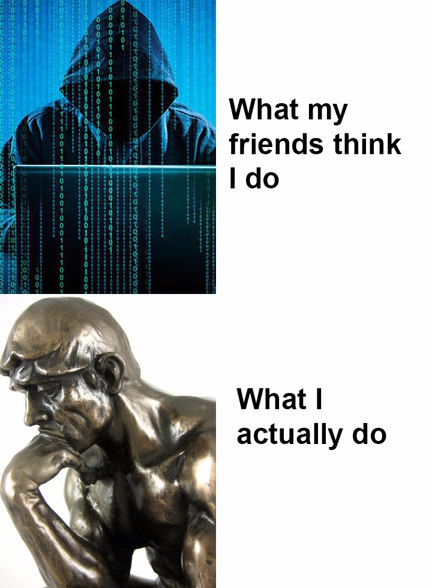
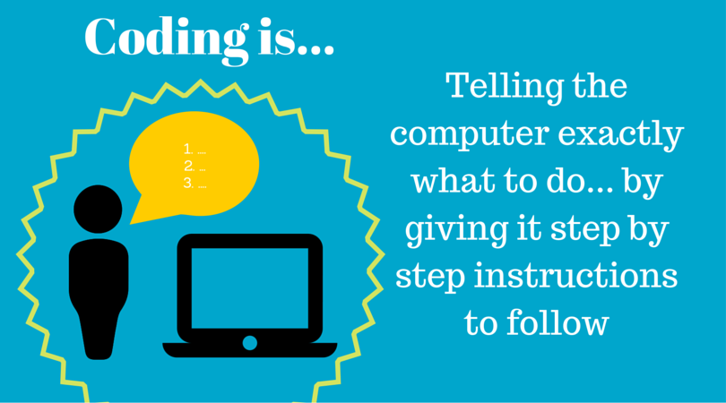

What Is Programming?
Programming is the process of writing the code which tells computer to what to do when it is executed. You can make computer do whatever you want, important thing is doing it in a proper way and the most optimized way. Programming became my hobby because it is a place where I can use my pure logic to solve problems and calculate different kind of numbers. Stage of learning the logic behind how to tell computer what to do can be painful but once you proceed that stage you will be able make real all your logic inside your brain. I love the part that I use my logic however, it is also a complete design work. Arranging your functions, classes in a proper way and optimize them to work perfectly...
You will learn how data is stored and how we manipulate this with different data types. After learning fundamentals, you will be able to create your own algorithms, maybe you will find a much faster way to compute the greatest common divisor of a number! Learning programming will develop your skill of thinking analytically, it can also help to understand some concepts of math and science.
